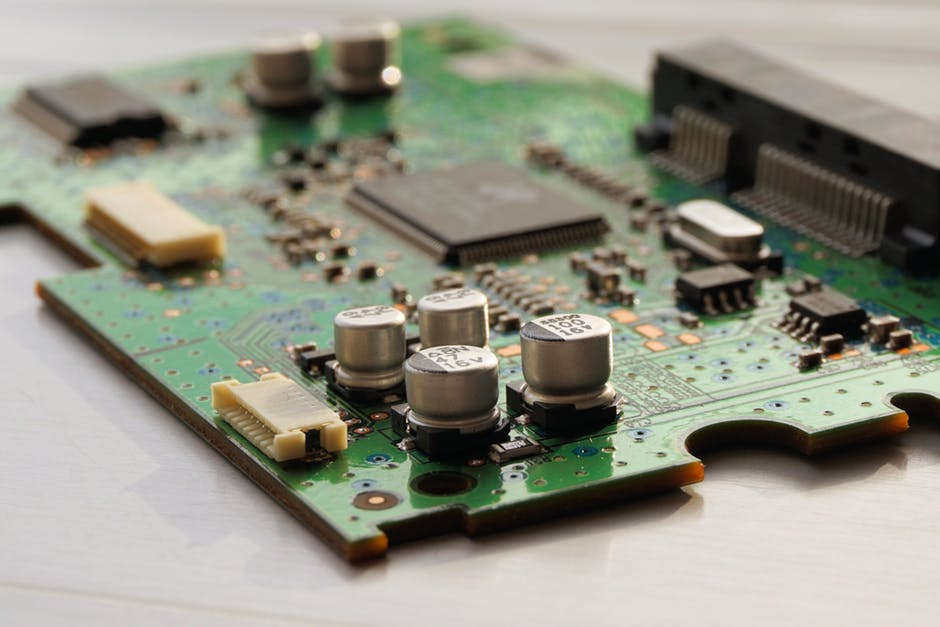

Our Vision

To build strong teaching and learning environment that can act to face the challenges of present and future.
1998
Establishment Year
20
seats per year
Research and Publications
- G. Kalita and N. Saikia, “Designing reversible arithmetic, logic circuit to implement micro-operation in quantum computation”, Journal of Physics: Conf. Series 759(2016) 012097 doi: 10.1088/1742-6596/759//1/012097.
- Kalita, G. and Saikia, N. “Reversible comparator circuit using a new reversible gate.” Proc. of 6th ICCC (September) Allahabad, India (2015) published by ACM(USA).
- G. Kalita, ‘‘Designing sorting algorithm to perform in LAN’’, Proc. of International Conference on Communications, Computers & Devices (ICCCD) December, 2010, IIT Kharagpur, India
- G. Kalita, ‘’A Software model for power leakage warning’’, A National conference on Power, organized by IE(I) Assam chapter, Proceedings Published by Institution of Engineers India.
- Multidimensional Multimetric Novel and Simple Techniques for Iris Recognition System.
- IJET "A solution for network life time problem using content based energy efficient routing algorithm".
- G. Kalita and N. Saikia, ‘’Heuristics in reversible logic’’ (to be submitted)
- G. Kalita and N. Saikia, ‘’Mathematical modelling in reversible logic’’(to be submitted)
- G. Kalita and N. Saikia, ‘’Hardware lock and key using reversible logic’’, (to be submitted)